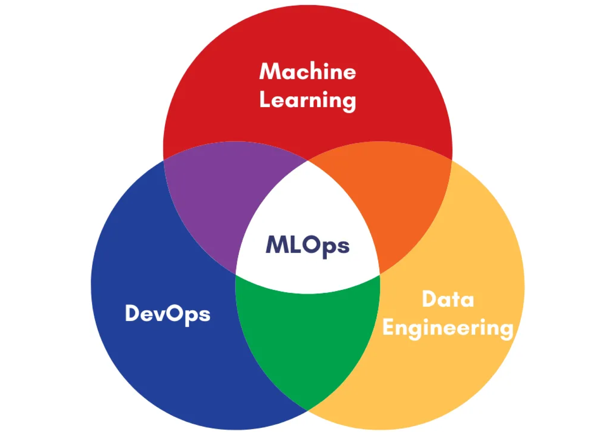
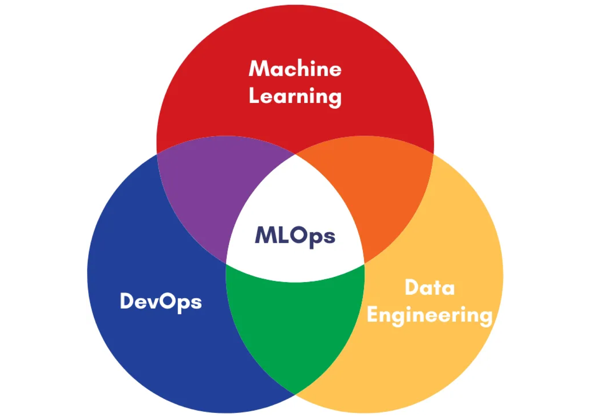

❖ ü§î To MLOps, or not to MLOps? That is the question ‚Äî the
platform is the answer üöÄ.
How does a correct MLOps strategy enable success for data science projects in a
large organisation? What is an effective MLOps team?
Read my Medium article to find out!

